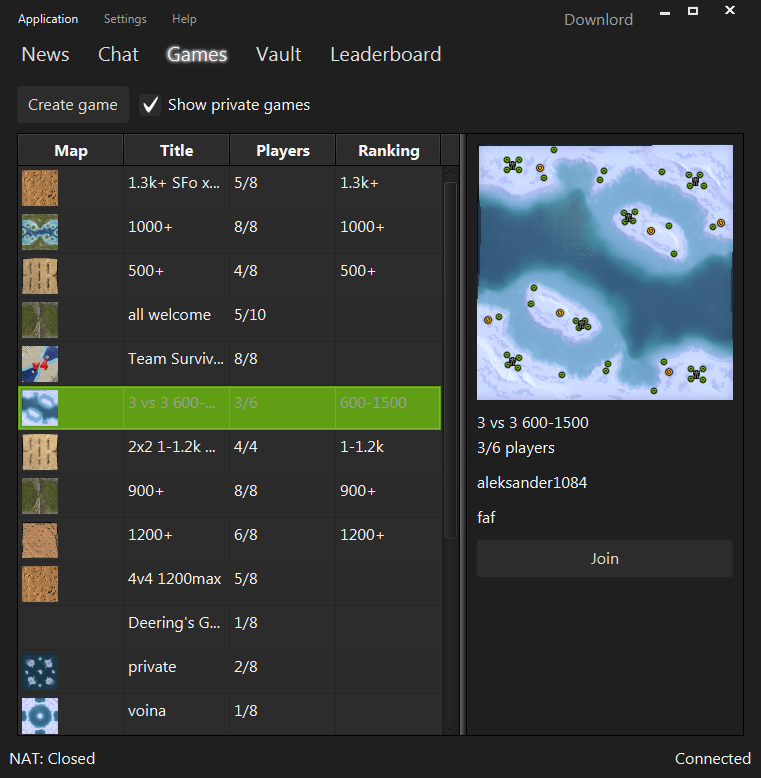

Forged Alliance Forever Client 2.0
Are you sick of the buggy and out-of-date FAF lobby? Do you think it's time for a modern and actively developed and future-proof client? Well commander, you can help make it happen. Donate now!
- $5 or more Thank you very much!
- $10 or more I'll send you a PM to thank you for your support
- $25 or more Your name will be listed in the "backers" list within the client
- $50 or more I'll add you as a tester to keep you up to date with the newest version. Your name will go into the "special thanks" section in the client's "About" window.
The more people donate, the more I will be able to work on it (since I'm self-employed).
Donation status
Basic features
| Feature | Description | Complexity | Status |
|---|---|---|---|
| FAF login | Logging into FAF server, reporting you as online | 4/5 | Done |
| IRC login | Logging into IRC chat | 2/5 | Done |
| Public chat | Chat panel, list of online users, country flags, avatars, hyperlinks | 4/5 | Done |
| Chat user categories | Categorizing users by friend/foe/moderators/others/IRC only | 3/5 | Done |
| Private messages | Sending and receiving private messages | 1/5 | Done |
| FAF reconnection | Automatic reconnection to FAF if connection has been lost | 2/5 | Done |
| IRC reconnection | Automatic reconnection to IRC if connection has been lost | 2/5 | Done |
| Listing available games | Lists open games with name/map preview/players | 2/5 | Done |
| Launch game | Launch the game as commanded by the server | 2/5 | Done |
| Proxy support | Allows indirect connection to other peers. *Implemented but untested | 4/5 | In progress* |
| Local relay server | Connects the game with the FAF server in order to report lobby status etc | 3/5 | Done |
| Port check | Checks whether your game port is reachable. *Needs server-side support | 1/5 | Done* |
| Create new game | Dialog that allows you to create a new game | 2/5 | In progress |
| Binary patching | Patching of ForgedAlliance.exe and some DLL-Files | 3/5 | Done |
| Log rotation | No more super large log files; automatic log file rotation (limits log file size) | 1/5 | Open |
| Auto-Update | Downloading files (mods) from FAF update server | 4/5 | Open |
| Map vault | Listing/downloading/uploading/removing maps | 2/5 | Open |
| Replay vault | Listing, sorting, searching and parsing replays | 3/5 | Open |
| Mod vault | Listing, sorting, filtering, (un-)installing and uploading mods | 3/5 | Open |
| Tutorials vault | Listing, sorting, filtering, starting tutorials | 2/5 | Open |
| Local replay server | Storing replays and forwarding them to the online replay server | 3/4 | Open |
| Leaderboards | Listing and searching players on leaderboards | 2/5 | Open |
| Mumble connector | Automatically launching Mumble and creating/joining channels as needed | 2/5 | Open |
| FAF sign up | Registering as a new player | 1/5 | Open |
| Automatic IRC registration | Automatically registers your FAF user to the IRC server | 1/5 | Open |
| Player information | Displaying information about a player (stats, other?) | 2/5 | Open |
| Notifications | Notifying about friends that joined/hosted games, games that are ready to go | 3/5 | Open |
| UPnP | Automatically configures port-forwarding on your router, if possible | 1/5 | Open |
| 1v1 automatch | Reports yourself as available for 1v1 match, or notifies you if one is available | 2/5 | Open |
| Tournaments | Listing/joining/leaving tournaments | 2/5 | Open |
Mobile app
A mobile app (iOS and Android) that connects to your FAF client (through WLAN) allowing you to continue chatting while sitting on the toilet and observing the game-lobby while having a smoke. To mention just some of the possibilities. Free for donators, $1.- for others.
Screenshots



Questions you may ask
Why a new lobby?
While the current lobby fulfills its purpose, it's pretty crippled. There are many bugs, it doesn't look really good and, from a technical perspective, the design is flawed.
So why not just fixing the old lobby? Well, fixing code instead of replacing it is more efficient up to a certain point. But once that point is crossed and there is too much to fix (not only bugs, but a flawed design), you're better of rewriting it from scratch. Has that point been crossed? Well, I'm not that sure, but as far as I can tell it's surely pretty close to it.
But here is the main problem: we don't have the resources. While there pop up people here and there wanting to help, what is needed is at least one committed and skilled developer. Sheeo you say? Well, he's so busy fixing the server code (which is much worse than the client code) that he probably won't have time before the end of the year.
So why don't I fix it you ask? Because I'm neither a skilled Python developer nor do I have the desire to become one. I am however, an experienced and skilled Java developer (unfortunately there's no trueskill for developers to prove that claim :-))
Who are you anyway?
My name is Michel (aka Downlord), I'm 26 and I've been a professional software engineer since 2008 (well, that time I was rather crappy). Recently I was part of a 100-man development team that has been developing the [Swiss RTGS system SIC](http://www.six-interbank-clearing.com/en/home/payment-services/sic/sic4-new-sic-architecture.html), which is a two-digit million dollar project basically handling the Swiss bank's money. Since its launch date on 16. April it had no single failure - so trust me when I tell you: I know what high quality software looks like (swiss made, anyone? ;-)).
I quit this exciting project in September 2014 since I wanted to change something in my life; I wanted to be self-employed. And here I am now.
Why should I donate?
When I started re-implementing the FAF lobby in March 2015, it was just a fun project for myself, since I wanted something to learn JavaFX 8.0. Since then I spent a lot of my "free" time (self-employed, remember?) integrating more and more features because it's a lot of fun!
However, all that time is unpaid but the bills keep coming. So I have to make a decision: drastically reducing the time working on it to have more time for things that actually pay, or trying to get you helping me out so that I can keep working on it all day long for weeks without having to worry about losing my flat. That way I'm able to implement all missing features and more pretty soon, providing you a clean, good documented and actively developed lobby for a bright FAF future.
What if the donation goals won't be reached?
Every $100.- allows me to work like 12h on this project (you see, I slave myself). That is, the more people donate, the more I can work on it. If people are no longer donating, I will reduce but not eliminate my time spent. So your money will always bring this project forward - and keep in mind, there's already an almost usable version before donations even started.
What if the current lobby is suddenly improved?
Maybe someone picks up on the current lobby (acutally PattogoTehen already did) and my work seems obsolete, what then? First of all, as you can see in the linked topic, PattogoTehen added improvements to the lobby that didn't make their way into the official client for almost two years. But even if this suddenly changes and he becomes the new lobby councilor, I don't think he (or anyone else) will have enough time to really improve the lobby rather than just applying patches here and there. Because this would take months of work for someone doing it in their spare time. However, if an unexpected miracle happens that renders this project completely useless, I would stop working on it and refund any excess donations (e. g. if I worked for 1 month but received $3,000.- I would refund $2,000.-).